全部主題
Meta announced the Muse Spark Open AI model today, claiming that it's the "most capable US open-weight model to date." But the company also says that it's the "the first model in its class" that can "run on your desktop using two Apple M5 Ultra Mac Studios with the latest MLX fra
SpaceX旗下AI部門SpaceXSI周三（10/14）推出新一代語音模型Grok Voice 3.0，在第三方評測機構Artificial Analysis的語音對語音綜合指數（Speech-to-Speech Index）中，以86.9分排名第一，超越OpenAI及Google的競爭模型。新模型主打快速語音回應與企業客服應用，SpaceXSI宣稱回應時間可低於1秒。
【科技早餐】今天精選 7 則國內外重要科技新聞。 ＊台積電證實洽談馬斯克 Terafab，魏哲家：晶圓廠必須由台積電營運 台積電（TSMC）10 月 15 日在法說會證實，正與馬斯克推動的 Terafab 晶圓廠計畫洽談合作，並已派團隊前往德州評估。董事長暨總裁魏哲家表示，美國主要客戶持續要求增加當地產能，公司因此評估亞利桑那州以外的擴產機會，德州是選項之一。他強調，合作方式仍在討論，若有具體結論將對外說明，但晶圓廠必須由台積電營運；目前尚未宣布投資協議或建廠時程。 第 3 季台積電合併營收為新台幣 1 兆 4,942.4 億元，稅後淨利 7,630.6
Bluesky's Attie AI tool, which initially launched earlier this year as a way to use AI to build your own feeds, now lets you make "small" social apps like games, polls, and dashboards that you can then share with others as their own websites. In an interview at TechCrunch Disrupt
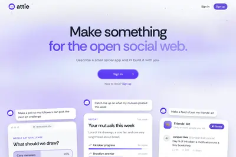
Microsoft and Nvidia held a launch party for the first wave of RTX Spark laptops last week in San Francisco, where a new wave of AI PCs took center stage amid a packed crowd and a lively hands-on area. A day after the media event, I was invited to a quieter Nvidia event to hear [
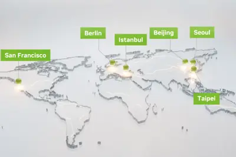
The new shopping tool is available in the U.S. across Google Search and the Gemini app.
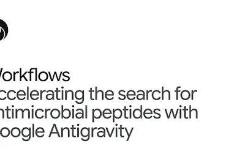
NVIDIA today released Nemotron 3.5 Super VL, an open 120-billion-parameter model that delivers the fastest task completion and highest accuracy for specialized always-on agents. Joining it are two new edge models: Nemotron 3.5 Bolt 74B-A9B 24GB, optimized to balance intelligence
IT之家 10 月 15 日消息，美国人工智能公司 Anthropic 近日宣布弃用 Git，转为采用自研的版本控制系统 Scion，将大部分源代码管理操作转移至服务器，减少智能体和自动化任务需要下载的数据。 Anthropic 表示，公司 5 月平均每天合并 2500 次代码变更；到了 9 月，这一数字已经超过 3 万次，Git 已经无法满足需求， 为此公司选择自研 Scion 系统 。 Anthropic 宣称， Scion 的 CPU 和内存消耗仅为 Git 的两百分之一 。切换系统后，CI 和研究任务代码检出操作仅需几秒钟，不再是之前的几分钟。
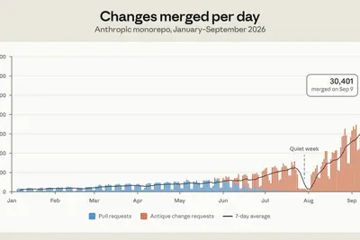
9 月 29 日 OpenAI 在 DevDay 發表 Dots，搭載 GPT-6 Astra，有雲端電腦與瀏 […]
AI Agent 逐步從協助回答問題走向自主規劃並執行任務，企業導入AI的挑戰也隨之改變。中華電信總經理林榮賜指出，當AI開始介入企業工作流程，如何管理資料使用、權限設...
AI的國家級發展戰略，已經成為全球先進國家不能忽視的重點。新加坡作為東協領頭羊，又具有國際樞紐的關鍵角色，DIGITIMES內容團隊多次於新加坡進行採訪，本次則線上...
2026年SEMICON West期間，華府官員與國會議員密集談論回流與AI輸出政策，美國商務部國際貿易署官員Brandon Remington力推「美國SI出口計畫」，並多次強調，美國...
人工智慧（AI）驅動NAND迎來需求超級週期，長江存儲已成為成長最快的記憶體供應商，預估2026年營收成長速度將超越整體產業與同業達6倍，得益於該公司積極拓展伺服器...
面對生成式AI快速發展，電商產業正從傳統流量經營邁向AI導購與智慧化營運。SaaS服務電商平台SHOPLINE表示，其2026年整體商品交易總額（GMV）較2025年成長20%，...
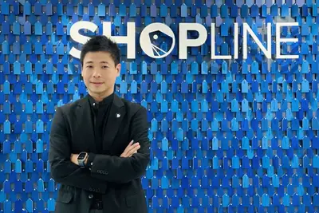
NVIDIA深化中國遊戲市場布局，新一代DLSS 5神經渲染技術將導入網易、騰訊等知名遊戲業者參與開發的作品，名單也涵蓋完美世界旗下幻塔工作室及靈游坊。<br ...
進入人工智慧（AI）時代後，曾稱霸PC市場的英特爾（Intel），一度被外界視為在AI競賽中掉隊。近年AI算力競爭主要圍繞AI加速晶片展開，由NVIDIA佔據市場主導地位。若...
IT之家 10 月 16 日消息，在最新一期 Power On 播客节目中，彭博社的马克 · 古尔曼（Mark Gurman）再次表示苹果公司“已基本停止”研发 M6 芯片，目前正集中资源推进 M7 系列芯片。 古尔曼表示 M6 芯片研发“基本已经完成”，苹果公司后续基本上不会推出 M6 Pro、M6 Max 或 M6 Ultra 等高端版本。M6 将主要应用于 Mac mini、iMac 以及入门级 14 英寸 MacBook Pro； 即将发布的 OLED MacBook Pro 则会先搭载现有 M5 Pro 和 M5 Max 芯片 。 古尔曼称目前
ChatGPT、Gemini 等 AI 模型幾乎只靠簡體資料來認識中文世界，讓 AI 向中國價值觀傾斜。台灣政 […]
The company generated over $30 million in revenue in two years and was acquired by MyFitness for an undisclosed amount of money in March.
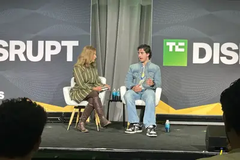
Google DeepMind 首席 AI 整備長萊拉·易卜拉欣（Lila Ibrahim）表示，她之所以願意 […]
IT之家 10 月 16 日消息，据《商业内幕》15 日报道，在英伟达成为 AI 巨头之前，CEO 黄仁勋曾为联系台积电费尽周折：接连打电话，却始终没人回电。 在 14 日发布的一段播客访谈中，黄仁勋讲述了自己最初如何联系上台积电创始人张忠谋。上世纪 90 年代末，英伟达需要寻找代工厂生产图形芯片。当时芯片代工产能紧张，部分厂商甚至要求客户提供技术授权，才肯接下订单。 黄仁勋听说过台积电。那时台积电的规模远不及今天，于是决定试着联系。黄仁勋从黄页电话簿中找到台积电美国办事处的电话号码，拨过去却 只听到语音留言 。 他留下联系方式，介绍英伟达开发的产品，之
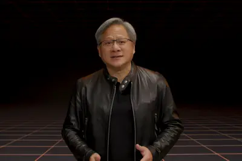
IT之家 10 月 15 日消息，阶跃星辰今日宣布正式开放 Step 5 Preview 模型权重，包含 BF16 与 FP8 两个版本，在 AI 编程、软件工程、专业知识工作、金融等任务上达到前沿水平。 模型权重已上线 Hugging Face 和 ModelScope，开发者可通过 vLLM 或 SGLang 部署兼容 OpenAI 接口的 API 服务，也可使用 Transformers 进行离线推理。 随后，华为、壁仞科技、沐曦股份、摩尔线程官方发文，宣布提供 0Day 支持。 据华为介绍，此次 Step 5 Preview 一经开源发布，昇腾就
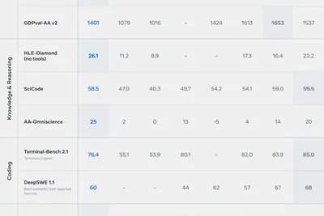
IT之家 10 月 16 日消息，据《商业内幕》报道，AI 领域的激烈竞争让科技从业者加班加点，但 OpenAI 企业产品负责人、旗下新款 AI 智能体 dots 负责人亚历山大 · 恩比里科斯认为，AI 也可以帮助人们大幅减少工作时间。 当地时间 15 日，恩比里科斯在 TechCrunch Disrupt 大会上指出，随着 AI 能力不断提升， 人们可以选择更加努力地工作，也可以把部分工作交给 AI ，让自己轻松一些。“我们有了更多选择。” 此前，一名记者问他，AI 究竟什么时候才能真正让人们拥有更多空闲时间。记者提到，一名 OpenAI 员工利用
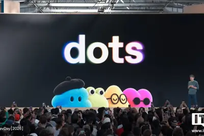
IT之家 10 月 16 日消息，蚂蚁百灵昨日宣布开源 Ling-3.1-flash 模型，Ling-3.1-flash 总参数约 560B，每个 Token 激活约 25B，最高支持 1M 上下文。 在 Artificial Analysis 的公开评测中，Ling-3.1-flash 的智能指数为 41、输出速度约为每秒 210 Token。 针对本地部署，团队对 routed experts 采用 MXFP4 量化、dense 层保持 block-FP8，权重占用从约 534GB 降至 292GB 。在对应的 Hopper GPU 测试配置中，服务
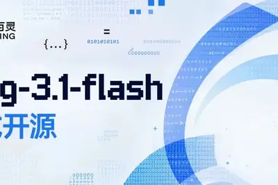
IT之家 10 月 16 日消息，当地时间 10 月 15 日，谷歌宣布其量子人工智能团队已通过实验证实、攻克了量子计算的一个核心瓶颈：在 Willow 量子芯片上成功验证了一项名为“魔态培育（Magic State Cultivation）”技术的实用可行性，与未采用该技术相比， 将量子计算错误率降低了约 40 倍 。相关研究成果已发表于《科学》期刊。 据介绍，要实现“通用量子计算”并运行实际程序，系统必须能够执行特定的量子操作集并完成量子纠错。这一目标可以通过预先制备所谓的“魔态（Magic States）”来实现；它们之所以得名“魔态”，正是因为能
IT之家 10 月 16 日消息，当前抗生素耐药性问题不断加剧，全球迫切需要新型抗生素，但新药研发往往缓慢且过程繁琐。谷歌推出的 Google Antigravity 智能开发平台，能够有效简化这一流程。 Google Antigravity 提供了智能科学工作台，支持生物学家快速发现、结构评估和筛选潜在靶点，将原本需要跨多个数据库的分散搜索整合到单次会话中。该平台还借助 ProtNLM 模型，帮助研究人员扫描 UniProt 数据库中数百万未表征的蛋白质，该模型可直接从氨基酸序列预测生物功能。 研究人员已经通过 Google Antigravity 发
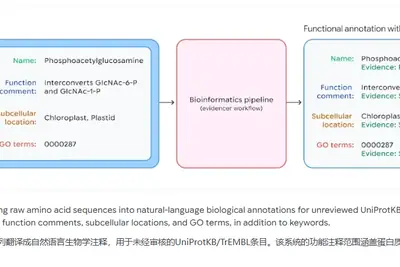
OpenAI's ChatGPT Atlas browser is gone, but now ChatGPT's Google Chrome extension is getting some upgrades that allow it to use the browser tabs you already have open. With the extension installed, OpenAI says ChatGPT can now view your browser tabs when you tag Chrome in ChatGPT'
Sega is removing Total War: Shogun 2 - Complete Edition from storefronts following a disastrous launch where users complained about issues like bugs and upscaling that appears to have been done by AI. Complete Edition, a remaster of the 2011 strategy game, launched on Tuesday, an
Though movies about disruptive tech founders are nothing new, 2026 has been unusually stacked with features that take a much more critical look at how Silicon Valley is reshaping our reality. Aaron Sorkin's The Social Reckoning frames Mark Zuckerberg as a robotic villain whose am
President Donald Trump posted a series of photos on Truth Social showing off renovations to the White House - but one of them appears to be modified with AI. The picture, which compares an old White House column to a "restored" one, has several discrepancies and was flagged by Go
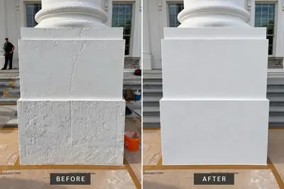
Powerful AI models continue to cause chaos, but their targets aren’t widely seeking justice. Instead, they’re being encouraged to adopt those same tools.
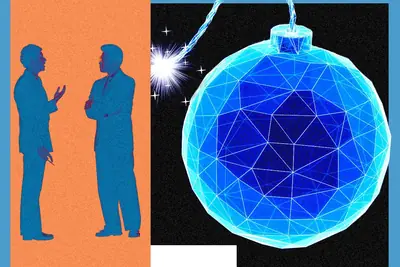
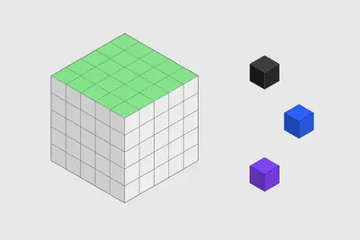
Speaking at TechCrunch Disrupt, Amazon devices chief Panos Panay described a future where ambient AI devices work in the background, anticipating users' needs instead of waiting for commands.
Tool: Chirp Pong Another game experiment - I wanted to see if it was feasible to have a two player game on two separate phones running in static HTML where the networking code uses chirps sent via the microphone. It seems to work! Build a two player competitive pong like game whe
METR will publish its own assessments of Anthropic’s risks, incidents, and practices, and the frontier AI model maker has given up the right to block them.
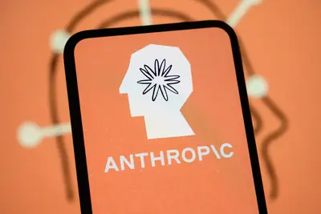
Introducing the Rosalind Academic Plan, offering eligible academic labs sponsored access to GPT-Rosalind and tools to advance life sciences research.
Savings of up to $200 end October 16 for TechCrunch Founder Summit. These savings for Founder and Investor Passes vanish after Friday. Join 1,000 founders and investors on November 4 at Boston’s SoWa Power Station. Bring your toughest questions and make the day count for your bus
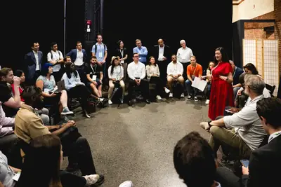
美國財政部高階官員週四（15 日）接受路透社專訪時表示，美國希望全球夥伴將人工智慧（AI）更名為「超級智慧」（ […]
Eyeing Apple’s new Home Collection products? Renters should check their lease agreement before installing.
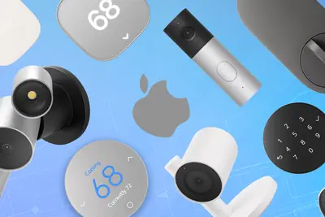
Apple reportedly set a date to unveil its new touchscreen MacBooks. Here’s what else we expect.